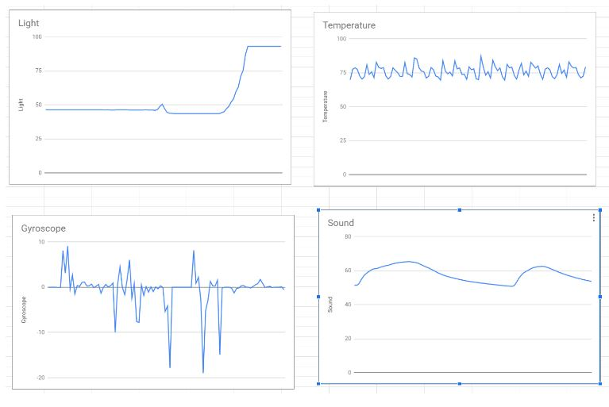

Home
Portfolio
About Me
This is my Portfolio Page!

A Guide to Vault Treasure Hunting
For this project we created a game. This game includes 3 levels all with different patterns that the player has to guess. After choosing the level the player wants to play, they choose their first movement, forward, left or right. If they choose the correct movement they move in the specified direction and get to choose another movement. If they do not choose the correct movement, their turtle turns red and goes back to the start. The turtle then turns back to black and the player has to restart the pattern. The goal is to get to the finish line by guessing the correct pattern. If the player reaches the finish line, their turtle turns green.


3-Player Draw
For this project, we had to create another game. This game includes two players competing against one another to draw the best drawing using arrows or aswd keys (they also can use other keys to put the pen up or down). The color and topic of drawing are chosen by the judge. After 45 seconds of drawing, the judge picks their favorite drawing and awards a point to winner. The players can play up to 6 rounds and once they decide to end the game, the computer will announce the winner.
Sports/Trivia Game
For this project, we used scratch to create a game where the player can choose a sport, between soccer and basketball, and then to score points, answers Despicable Me Trivia. The player is playing against the computer (if they answer the question incorrectly the computer gains a point and if they answer a question correctly they gain a point) and the first to 2 points wins.
A pHishy Fish Tank (Cyber Security)
For this project, we had to view suspicious activities to figure out how hackers were able to use a fish tank's network to get access to the casino's network. After we figured out how they phished their targets, we had to figure out and change what code they had changed to get into the network. After we fixed the code, we reported other ways in which the company can improve their fish tank security.
Mammoths (4.1.4 Project)
For this project, we examined different simulations that monitored real world variables. We chose to examine a model that showed how an increasing human population decreased the population of mammoths and how this affected the climate. We learned how to analyze a simulation through this project. We also learned how there can be problems with simulations and how they can always be improved to be more accurate. However, simulations are helpful to predict and showcase real-world examples.
Rover Phone Home (3.1.6 Project)
For this project, we tried to detect where the rover went lost on an alien planet. We used our knowledge of lights, gyroscopes, sound and temperature to try to identify which type of land the rover was on.

To Be Continued